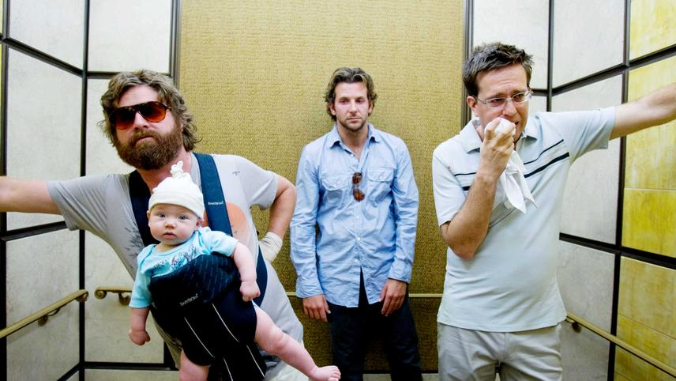
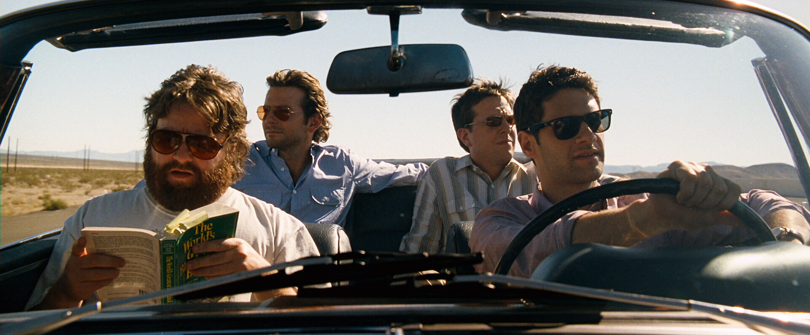
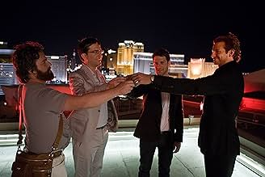
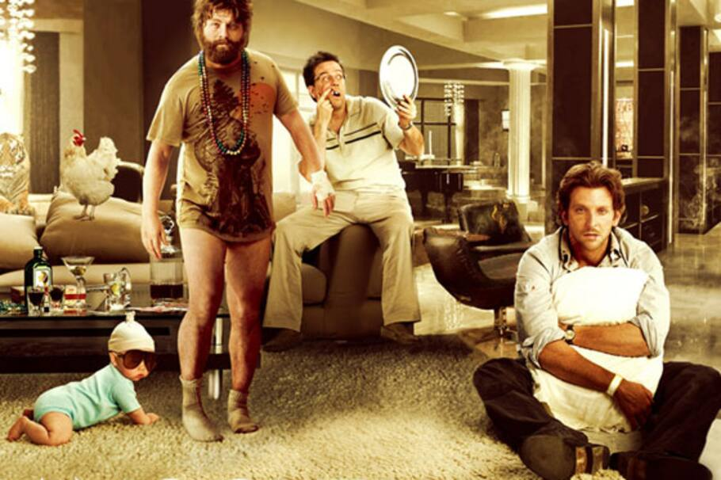
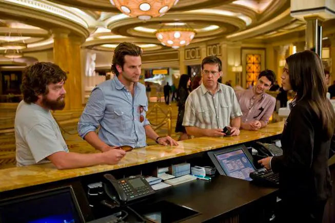

¿Qué pasó ayer?
introducción a la película

The Hangover (En español: ¿Qué pasó ayer?) es una comedia
que arranca con una premisa aparentemente simple, casi rutinaria: un grupo de
amigos viaja a Las Vegas
para celebrar una despedida de soltero. Todo parece encajar dentro de lo típico, lo esperado, lo
que cualquiera
imaginaría para una noche de fiesta antes de una boda.
Pero la historia no tarda en girar el volante y meterte de lleno en el desconcierto.

La historia comienza con Doug, el novio, y sus tres acompañantes: Phil, Stu y Alan. Cada uno representa una personalidad distinta dentro del grupo, lo que genera una dinámica interesante desde el inicio. Phil es el carismático líder informal, Stu es el más inseguro y controlado, y Alan… bueno, Alan es un factor impredecible, una especie de comodín humano que rompe cualquier lógica.
Antes de que la noche empiece, hay una escena clave: los cuatro brindan en la terraza del hotel con la ciudad de Las Vegas iluminando el fondo. Ese momento funciona como una especie de “antes del salto”, una calma breve antes de que todo se descontrole. Después de ese brindis… corte abrupto.

LA MAÑANA DESPUÉS DEL CAOS

A la mañana siguiente, la película se reinicia, pero en un estado completamente distinto.
Los personajes despiertan en una suite del Caesars Palace, con signos evidentes de una noche totalmente desmedida… pero sin
ningún recuerdo
de lo ocurrido. Sin contexto, sin explicación. Solo consecuencias. Pero esas consecuencias no son menores:
- Doug, el novio, desapareció.
- Hay un bebé en la habitación que nadie reconoce.
- A Stu le falta un diente.
- Hay un tigre en el baño.
- Y el entorno parece haber sido escenario de algo mucho más jodido de lo que imaginan
Desde ese momento, la película adopta una estructura muy particular: los protagonistas
deben reconstruir los hechos de la noche anterior
como si fueran detectives improvisados dentro de su propio desastre.
A medida que avanza la película, los protagonistas comienzan a seguir un rastro de pistas que los lleva por distintos lugares y situaciones cada vez más inesperadas. Se cruzan con personas que parecen saber más que ellos, descubren decisiones que no recuerdan haber tomado y enfrentan las consecuencias de sus propios actos sin haberlos vivido conscientemente.
El tiempo juega en su contra, porque la boda está cada vez más cerca, y la presión por encontrar a Doug crece.
La tensión no viene del peligro en sí, sino de la incertidumbre constante: no saber qué hicieron, qué más puede aparecer, o qué otra sorpresa los espera en el próximo paso
